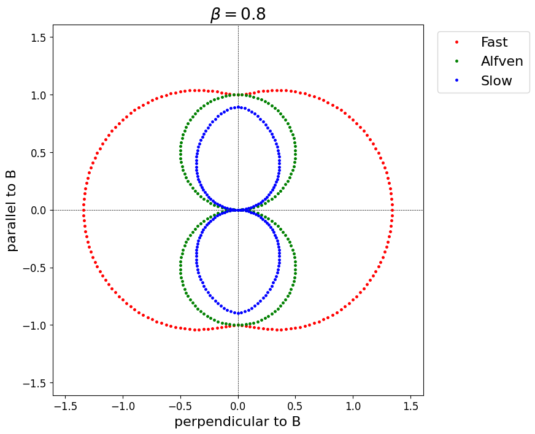

1 Magnetic Reconnection
1.1 Introduction
1.1.1 What is Magnetic Reconnection (MRX)?
- Magnetic-to-plasma energy conversion process
- Magnetospheric substorms
- Solar flares
- Dissipation in Poynting-flux dominated astrophysical flows
- Change of magnetic topology
- Plasma transport across boundaries
1.1.2 Naive MHD Prediction
- The frozen-in theorem indicates that MRX is strictly prohibited unless resistivity is finite.
- Simple magnetic diffusion time scale is typically many orders of magnitudes larger than observed dynamical time scales of the system.
- Should it play no role in nearly collisionless plasmas?

1.1.3 Magnetic Diffusion
Combining Faraday’s law and Ohm’s law in resistive MHD: \bm{E}' = \bm{E} + \frac{\bm{v}}{c} \times \bm{B} = \eta \bm{J}, we obtain the magnetic induction: \begin{aligned} \frac{\partial \bm{B}}{\partial t} &= \nabla \times \left( \bm{v} \times \bm{B} - c \eta \bm{J} \right) \\ &= \nabla \times \left( \bm{v} \times \bm{B} \right) + \frac{c^2 \eta}{4 \pi} \nabla^2 \bm{B}, \end{aligned}
The magnetic Reynolds number R_{\rm m} and Lundquist number S defined by R_{\rm m} = \dfrac{4 \pi L V}{c^2 \eta}, \quad S = \dfrac{4 \pi L V_{\rm A}}{c^2 \eta} are important dimensionless parameters. These two parameters will be used interchangeably.
Typical space plasmas have R_{\rm m} \gg 1, indicating that the magnetic diffusion is too slow to explain observed fast magnetic energy dissipation.
1.1.4 Reconnection Rate
The reconnection rate is defined as the normalized energy conversion rate through MRX.
Energy conversion rate via MRX: \tau_{\rm MRX}^{-1} = \frac{1}{B^2/8\pi} \frac{d}{dt} \left( \frac{B^2}{8\pi} \right) \sim 2 \left( \frac{V_{in}}{V_{\rm A}} \right) \left( \frac{V_{\rm A}}{\delta} \right) = 2 \left( \frac{V_{in}}{V_{\rm A}} \right) \tau_{\rm A}^{-1} where \tau_{\rm A} = \delta / V_{\rm A} is the Alfven transit time.
The reconnection may thus be defined by the Alfven Mach number of the inflow: M_{\rm A} = \frac{V_{in}}{V_{\rm A}} \sim \frac{\tau_{\rm A}}{\tau_{\rm MRX}} A larger M_{\rm A} indicates a larger incoming (magnetic) energy flux into the system, which is eventually dissipated at the diffusion region.
Reconnection with M_{\rm A} \gtrsim 0.01 is called “fast”, which is typically required in space and astrophysical plasma applications even if the magnetic Reynolds number is extremely large R_{\rm m} \gg 1.
1.1.5 MHD Waves
Consider small amplitude perturbations with frequency \omega and wavenumber k for a homogeneous magnetized plasma. Linearized equations are given by \begin{bmatrix} v_p^2 - V_{\rm S}^2 \sin^2 \theta - V_{\rm A}^2 & 0 & -V_{\rm S}^2 \sin\theta \cos\theta \\ 0 & v_p^2 - V_{\rm A}^2 \cos^2 \theta & 0 \\ -V_{\rm S}^2 \sin\theta \cos\theta & 0 & v_p^2 - V_{\rm S}^2 \cos^2\theta \end{bmatrix} \begin{bmatrix} \tilde{v}_x \\ \tilde{v}_y \\ \tilde{v}_z \end{bmatrix} = 0, where v_p = \omega/k is the phase velocity of the wave. The Alfven speed V_{\rm A} and sound speed V_{\rm S} are given respectively by V_{\rm A}= \frac{B_0}{\sqrt{4 \pi \rho_0}}, \quad V_{\rm S}= \sqrt{ \frac{\gamma P_0}{\rho_0} }
Shear Alfven wave v_p^2 = V_{\rm A}^2 \cos^2 \theta The shear Alfven wave is an incompressible transverse wave driven by the magnetic tension force.
Fast and slow magnetosonic wave (“fast mode” and “slow mode”) v_p^2 = \frac{V_{\rm S}^2 + V_{\rm A}^2}{2} \pm \frac{\sqrt{(V_{\rm A}^2 - V_{\rm S}^2)^2 + 4 V_{\rm A}^2 V_{\rm S}^2 \sin^2 \theta}}{2}, where the plus and minus signs are for fast and slow magnetosonic modes, respectively. They are both compressional but the phase relations are different.
- fast-mode: \delta p_{gas} \delta p_{mag} > 0 (both pressures oscillate in the same phase)
- slow-mode: \delta p_{gas} \delta p_{mag} < 0 (pressures oscillate in the opposite phase)
Property of MHD Waves: Friedrichs Diagram
Wave propagation speeds are anisotropic with respect to the magnetic field!

1.1.6 Ideal MHD Equations in Conservation Form
\begin{aligned} & \text{Mass} & \frac{\partial}{\partial t} \left( \rho \right) &+ \nabla \cdot \left[ \rho \bm{v} \right] = 0 \\ & \text{Momentum} & \frac{\partial}{\partial t} \left( \rho \bm{v} \right) &+ \nabla \cdot \left[ \rho \bm{v} \bm{v} + \left( p + \frac{B^2}{8 \pi} \right) \bm{I} - \frac{\bm{B}\bm{B}}{4 \pi} \right] = 0 \\ & \text{Energy} & \frac{\partial}{\partial t} \left( \frac{1}{2} \rho v^2 + \frac{p}{\gamma-1} + \frac{B^2}{8\pi} \right) &+ \nabla \cdot \left[ \left( \frac{1}{2} \rho v^2 + \frac{\gamma}{\gamma-1} p + \frac{B^2}{4\pi} \right) \bm{v} - \bm{v} \cdot \frac{\bm{B}\bm{B}}{4\pi} \right] = 0 \\ & \text{Magnetic flux} & \frac{\partial}{\partial t} \left( \bm{B} \right) &+ \nabla \cdot \left[ \bm{v} \bm{B} - \bm{B} \bm{v} \right] = 0 \end{aligned}
In addition, the magnetic field is subject to the constraint \nabla \cdot \bm{B} = 0
1.2 Steady Magnetic Reconnection
Classical models of MRX known as Sweet-Parker and Petschek models are based on the following assumptions:
- MHD (mostly ideal)
- 2D anti-parallel magnetic field
- steady state (\partial/\partial t = 0)
- incompressible (\beta \gg 1 and \rho \sim {\rm const})
Consequence of 2D steady state is that the out-of-plane electric field E_z is constant!
The constant out-of-plane electric field is often termed “the reconnection electric field” as it is directly related to the reconnection rate.
1.2.1 Sweet-Parker Model
- Mass flux conservation
V_{in} L \approx V_{out} \delta
- Pressure balance
P \approx \frac{B_0^2}{8\pi} \approx \frac{1}{2} \rho V_{out}^2
- Constancy of electric field
\frac{V_{in}}{c} B_0 = \eta j_z \approx \eta \frac{c}{4\pi} \frac{B_0}{\delta}
Above three conditions give: V_{out} \approx V_{\rm A}\quad \text{and} \quad M_{\rm A} \approx R_{\rm m}^{-1/2}
The energy conversion rate of Sweet-Parker reconnection \sim R_{\rm m}^{-1/2} is much more efficient than the simple magnetic diffusion \sim R_{\rm m}^{-1} in highly conducting plasmas R_{\rm m} \gg 1. It is, however, yet too slow.
1.2.2 Petschek Model
Physical Mechanism
- When the magnetic dissipation happens at the diffusion region, fast-mode rarefaction waves propagate outward to induce the inflow toward the diffusion region.
- Since the phase speed of slow-mode wave is zero at the strictly perpendicular propagation, the inflow must experience a standing slow-mode shock.
- The dissipation at the slow-mode shock plays the major role in the Petschek model.
Solution Strategy
Construct the solution by connecting solutions for the three characteristic regions, (I) inflow region, (II) outflow region, (III) diffusion region, through the appropriate boundary conditions.
- Since the outflow region is assumed to be infinitesimally thin, it does not appear explicitly. It appears only as a boundary condition for the inflow region.
- The analysis for the diffusion region is essentially the same as the Sweet-Parker model. Denoting the length of the diffusion region by l (instead of L), we find \frac{\delta}{L} \approx M_{\rm A}^{-1} R_{\rm m}^{-1} \left( \frac{B_x^{*}}{B_0} \right) where B_x^{*} is the magnetic field just ahead of the diffusion region.
Therefore, the solution in the inflow region and the Rankine-Hugoniot relations at the slow shock will determine the global solution.
Inflow Region
- Assume that the current-free (or force-free) state is established. The magnetic field in this region may be written by the solution of Laplace equation: \nabla^2 \Phi = 0 where \nabla \Phi = - \bm{B}.
- The presence of the slow shock at the neutral sheet imposes a boundary condition such that \bm{B} = B_n (x) \bm{e}_y. The finite opening angle of slow shocks may be ignored (for M_{\rm A} \ll 1) and the boundary condition is imposed at y = 0.
Under the assumption, the magnetic field in the inflow region is given by \begin{aligned} & B_x \approx \frac{1}{\pi} \int_{-L}^{+L} B_n(x') \frac{x-x'}{(x-x')^2 + y^2} d x' + B_0 \approx \frac{2 B_n}{\pi} \log \left[ \frac{\sqrt{x^2 + y^2}}{L} \right] + B_0 \\ & B_y \approx \frac{1}{\pi} \int_{-L}^{+L} B_n(x') \frac{y}{(x-x')^2 + y^2} d x' \approx \frac{2 B_n}{\pi} \tan^{-1} \left[ \frac{x}{y} \right] \end{aligned}
Approximate Rankine-Hugoniot Relations at Slow Shock
In addition to the trivial relationship \left[ B_n \right] = 0, the incompressible assumption gives \left[ \rho \right] = \left[ v_n \right] = 0.
Non-trivial relationships are given by the momentum conservation law \bm{n} \cdot \left[ \rho \bm{v} \bm{v} - \frac{\bm{B}\bm{B}}{4\pi} \right] = 0 \quad \rightarrow \quad \rho v_n \left[ \bm{v}_t \right] = \frac{B_n}{4\pi} \left[ \bm{B}_t \right] and Faraday’s law (or the constancy of electric field) \bm{n} \times \left[ \bm{v} \times \bm{B} \right] = 0 \quad \rightarrow \quad v_n \left[ \bm{B}_t \right] = B_n \left[ \bm{v}_t \right]
We then obtain the following relationships v_n = \frac{B_n}{\sqrt{4\pi\rho}} \quad \text{and} \quad \left[ \bm{v}_t \right] = \frac{1}{4\pi\rho} \left[ \bm{B}_t \right]
- The shock speed v_n is determined by the normal component of the magnetic field B_n.
- A switch-off shock with v_{t,1} = 0, B_{t,2} = 0 accelerates the incoming plasma in the transverse direction to the upstream Alfven speed due to the magnetic tension force.
Maximum Reconnection Rate
- If B_n \ll B_0, a larger B_n makes the inflow speed (as predicted by the Rankine-Hugoniot relations) faster.
- However, if B_n \sim B_0, a larger B_n (\sim B_y) makes the incoming magnetic flux B_x just upstream of the slow shock smaller, making reconnection less efficient in terms of energy supply.
- Therefore, the maximum reconnection rate may crudely be estimated by B_n \sim B_0/2.
The magnetic field just ahead of the slow shock B_{x}^{**} = B_0 + \frac{2 B_n}{\pi} \log \left( \frac{\delta}{L} \right) \sim \frac{B_0}{2} and B_n \sim 2 B_{y}^{**} \sim 2 M_{\rm A} B_0 gives the maximum reconnection rate M_{\rm A} \approx \frac{\pi}{8} \frac{1}{\log (M_{\rm A} R_{\rm m})}, where \delta/L \sim M_{\rm A}^{-1} R_{\rm m}^{-1}. It now depends only very weakly on R_{\rm m}. A fast reconnection with M_{\rm A} \sim 0.01 is possible for diverse space plasma applications. However, it is well known that the Petschek reconnection is not stable for the uniform resistivity. How to achieve a localized resistivity required for the Petschek reconnection is not understood, if it is possible at all.
1.3 Tearing Instability
1.3.1 Resistive MHD Tearing Instability
- How magnetic reconnection is initiated and possibly evolves into steady reconnection (such as Sweet-Parker or Petschek models)?
- Consider a perturbative solution to an equilibrium current sheet as a initial value problem. The system is linearly unstable under resistive MHD and is known as the tearing instability.
Energy Principle
Poynting theorem: \frac{\partial}{\partial t} \left( \frac{\bm{E}^2 + \bm{B}^2}{8\pi} \right) + \nabla \cdot \left( \frac{c}{4 \pi} \bm{E} \times \bm{B} \right) = - \bm{j} \cdot \bm{E} Integrating over the volume and assuming E/B \sim V/c \ll 1 (valid for non-relativistic MHD), we have \frac{\partial}{\partial t} \int \frac{B^2}{8\pi} \, dV = - \int \bm{j} \cdot \bm{E} \, dV
Considering perturbations such as \bm{B} = \bm{B}_0 + \bm{B}_1 + \bm{B}_2 + \cdots, we find the lowest-order (which is second order) meaning full equation is given by \frac{\partial}{\partial t} \int \frac{B_1^2}{8\pi} \, dV = - \int \bm{j}_1 \cdot \bm{E}_1 \, dV. The stability of the system is determined by the correlation between \bm{j}_1 and \bm{E}_1.
Adiabatic Response
Let us separate the perturbation into an adiabatic part (due to ideal MHD response) and a non-adiabatic part (due to non-ideal MHD response): \bm{j}_1 = \bm{j}_1^\text{ad} + \bm{j}_1^\text{non-ad}
Since the resistive effect is important only at very close vicinity of the neutral sheet y \approx 0, the ideal MHD approximation will be reasonable everywhere else. Assuming that the z component of the vector potential is written as A_z = \tilde{A} (y) e^{i k x + \gamma t} + A_0 (y), we obtain F(y) \left( \tilde{A}'' - k^2 \tilde{A} \right) + F''(y) \tilde{A} = 0 where F(y) \equiv B_0 \tanh (y/\lambda) is the zeroth order (Harris) current sheet, with \lambda being its thickness. The solution is given by \tilde{A}(y) = \tilde{A}(0) \left[ 1 + \frac{\tanh (|y|/\lambda)}{k \lambda} \right] \exp(-k |y|), which satisfies the boundary condition: \tilde{A}(\pm \infty) = 0.
We can now substitute the solution to evaluate the left-hand side of the energy principle: \frac{\partial}{\partial t} \int \left[ \frac{\bm{B}_1^2}{8 \pi} + \bm{j}_1^\text{ad} \cdot \bm{E}_1 \right] dy = - \int_{-\infty}^{+\infty} \bm{j}_{1}^\text{non-ad} \cdot \bm{E}_1 \, dy.
After tedious algebra, the energy principle becomes: - \frac{\gamma k}{2\pi} \frac{1 - k^2 \lambda^2}{k^2 \lambda^2} \left| \tilde{A}(0) \right|^2 = - \int_{-\infty}^{+\infty} \bm{j}_{1}^\text{non-ad} \cdot \bm{E}_1 \, dy.
Since MRX is a process that convert the magnetic energy to the plasma thermal and kinetic energy, \bm{j}_1^\text{non-ad} \cdot \bm{E}_1 > 0 is needed. Therefore, the wavelength must satisfy the condition k \lambda < 1 (i.e., long wavelength) for the growth of the tearing mode \gamma > 0.
The actual growth rate should only be obtained by specifying the non-adiabatic response \bm{j}_1^\text{non-ad}
Growth Rate
Let us assume that the non-adiabatic current is given by a constant resistivity/conductivity \sigma = 1/\eta within a thin layer of thickness d \bm{j}_1^\text{non-ad} = \begin{cases} \sigma E_1 \quad & |y| < d \\ 0 \quad & |y| > d \end{cases} Substituting this to the energy principle yields \frac{\gamma k}{2 \pi} \frac{1 - k^2 \lambda^2}{k^2 \lambda^2} \left| \tilde{A}(0) \right|^2 \approx 2 \frac{\gamma^2}{c^2} \sigma d \left| \tilde{A}(0) \right|^2. The thickness d has to be chosen such that the left- and right-hand sides of the above equation balance with each other. Ordering consideration shows the relationship \left( \frac{d}{\lambda} \right)^4 \sim (\gamma \tau_A) R_m^{-1}, from which we obtain the growth rate \gamma \tau_A \sim \left( \frac{1 - k^2 \lambda^2}{k \lambda} \right)^{4/5} R_m^{-3/5}. It is faster than simple magnetic diffusion (\propto R_m^{-1}), but very slow in high-R_m plasmas.
1.3.2 Collisionless Tearing Instability
Meandering Motion Near the Neutral Sheet
Charged particles do not perform a cyclotron motion at the neutral sheet where the magnetic field is nearly zero (changes its polarity from the one side to the other). The particular type of particle motion at the neutral sheet is called meandering motion. The thickness of the meandering layer d may be estimated by d = \sqrt{r_g \lambda}, where r_g = v/\Omega_{0} = v \cdot (m c / q B_0) is the gyroradius defined with the magnetic field strength B_0 far from the sheet, and \lambda is the thickness of the current sheet.
Effective Inertial Resistivity
The effective resistivity \eta_\text{eff} in the presence effective collisions with the collision frequency \nu_\text{eff} may be given by \eta_\text{eff} = \frac{1}{\sigma_\text{eff}} \approx \frac{m_e}{n e^2} \nu_\text{eff}. If we estimate the collision frequency by the typical travel time of thermal electrons over the distance \sim 1/k, we have \nu_\text{eff} \sim k v_{th,e} \propto T_e^{1/2}. A high temperature plasma has a larger effective resistivity.
Growth Rate
The non-adiabatic current may be estimated by the one produced by the meandering particles: \bm{j}_1^\text{non-ad} = \begin{cases} \sigma_\text{eff} E_1 \quad & |y| < d \\ 0 \quad & |y| > d \end{cases} Note that d is given by the gyroradius and does not satisfy the ordering used in the analysis of the resistive MHD tearing instability.
We then obtain the growth rate for the collisionless tearing instability: \gamma \tau_{A} \approx \left( \frac{r_g}{\lambda} \right)^{3/2} \beta_e^{1/2} \left( \frac{m_i}{m_e} \right)^{1/2} \left( 1 + \frac{T_i}{T_e} \right) \frac{1 - k^2 \lambda^2}{k \lambda} It is important to understand that the growth rate is largely dependent on the ratio r_g/\lambda, which means that the thin current sheet (with respect to the gyroradius) is required for fast growth of the collisionless tearing instability.
1.4 Collisionless Magnetic Reconnection
1.4.1 Generalized Ohm’s Law
Equation of motion for the electron fluid: n_e m_e \frac{d}{dt} \bm{v}_e = - \nabla \cdot \bm{p}_e - n_e e \left( \bm{E} + \frac{\bm{v}_e}{c} \times \bm{B} \right) Ampere’s law: \nabla \times \bm{B} = \frac{4 \pi}{c} \bm{j} = \frac{4 \pi}{c} n e (\bm{v}_i - \bm{v}_e) Eliminating \bm{v}_e from the above equations, we obtain the following generalized Ohm’s law \bm{E} = - \frac{\bm{v}_i}{c} \times \bm{B} + \frac{\bm{j}}{n e c} \times \bm{B} - \frac{1}{n e} \nabla \cdot \bm{p}_e + \frac{m_e}{n e^2} \frac{d}{dt} \bm{j} The first term on the right-hand side is the ideal MHD term and the rest is coming from the collisionless effect. How large are the non-ideal MHD terms relative to the ideal MHD term?
1.4.2 Effective Resistivity
The non-ideal MHD terms may or may not work as effective resistivity. From electromagnetic to matter energy conversion rate is given by \bm{j} \cdot \bm{E} = - \bm{j} \cdot \left( \frac{\bm{v}_i}{c} \times \bm{B} \right) + \bm{j} \cdot \left( \frac{\bm{j}}{n e c} \times \bm{B} \right) + \bm{j} \cdot \left( - \frac{1}{n e} \nabla \cdot \bm{p}_e + \frac{m_e}{n e^2} \frac{d}{d t} \bm{j} \right) + \eta \bm{j}^2, where a finite resistivity \eta is included. The first term on the right-hand side describes reversible (ideal MHD) energy exchange. The second term describing the Hall effect does not contribute to the dissipation.
Anomalous Resistivity
If microscopic fluctuations (plasma waves) are strong enough such that particles are efficiently scattered, effective resistivity (known as anomalous resistivity) may potentially arise. Since the waves naturally involve temporal oscillations of the current, the anomalous resistivity has to be related to d \bm{j} / dt in Ohm’s law.
Inertial Resistivity
Finite residence time of particles in the diffusion region indicates that the energy is carried away by the particles, allowing continuous energy conversion from the electromagnetic energy. It is related to off-diagonal components of the electron pressure tensor \bm{p}_e.
1.4.3 Relation to Collisionless Tearing Instability
If we assume the idealized situation where magnetic reconnection proceeds quasi-steady manner in 2D, the reconnection electric field at the diffusion region has to be sustained by the term proportional to \nabla \cdot \bm{p}_e in Ohm’s law.
The reconnection electric field is then given by E_z \approx - \frac{1}{n e} \left( \frac{\partial p_{e,xz}}{\partial x} + \frac{\partial p_{e,yz}}{\partial y} \right). The origin of the electric field is associated with the acceleration of meandering electrons in the out-of-plane direction.
1.4.4 Comparison between Various Simulation Models
Comparison between various simulation models suggests that the Hall term is the essential physics for fast magnetic reconnection. Note that, however, there have been studies suggesting that the Hall term is not alway necessary to achieve fast reconnection.
Bern et al. (2001, JGR)
1.4.5 Hall Reconnection
Hall term does not directly contribute to the dissipation because \bm{j} \cdot (\bm{j} \times \bm{B}) = 0. However, it potentially enhances magnetic reconnection.
The diffusion region in collisionless reconnection is often characterized by the Hall effect, which signifies the decoupling between ions and electrons. Consequently, the diffusion region is divided into the two regions:
- ion diffusion region (IDR): ions are unmagnetized while electrons are magnetized
- electron diffusion region (EDR): both ions and electrons are unmagnetized
1.4.6 Spacecraft Observation
Ion Diffusion Region (IDR)
The first experimental evidence of Hall reconnection was obtained by Geotail spacecraft in the magnetotail as the decoupling between ions and electrons (Nagai et al. 2001, JGR).
Electron Diffusion Region (EDR)
Observation of symmetric reconnection in the magnetotail region identified the EDR as the region where the dissipation occurs.
Polar observation of asymmetric reconnection in the magnetopause region found the EDR as an enhanced non-gyrotropy of the electron pressure tensor.
Magnetospheric Multiscale (MMS) mission finally resolved the EDR for asymmetric reconnection in the magnetopause region by Burch et al. (2016) and then symmetric reconnection in the magnetotail by Torbert et al. (2018). Clear identification of the EDR has been performed by observation of detailed electron velcity distribution functions (VDFs) though comparison with fully kinetic simulations (see below).
Space Plasma Physics I (T. Amano)